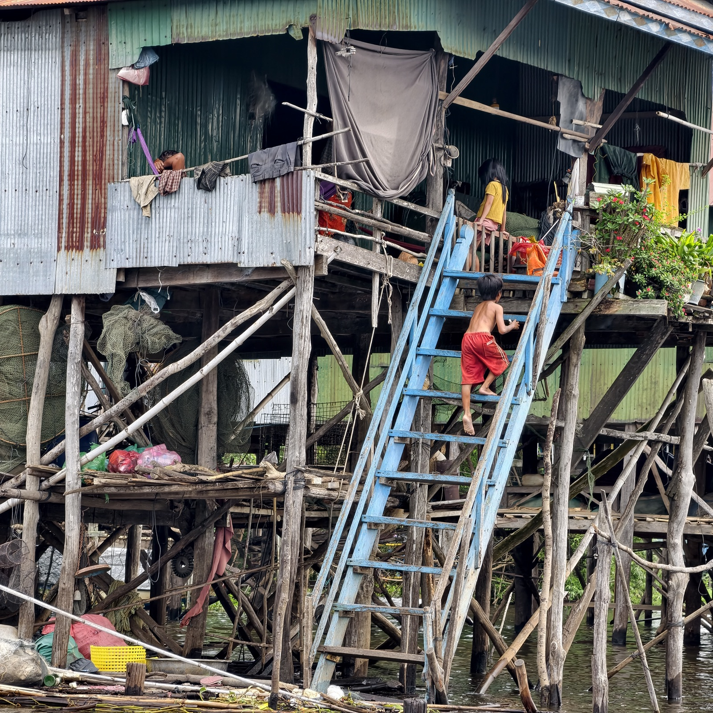
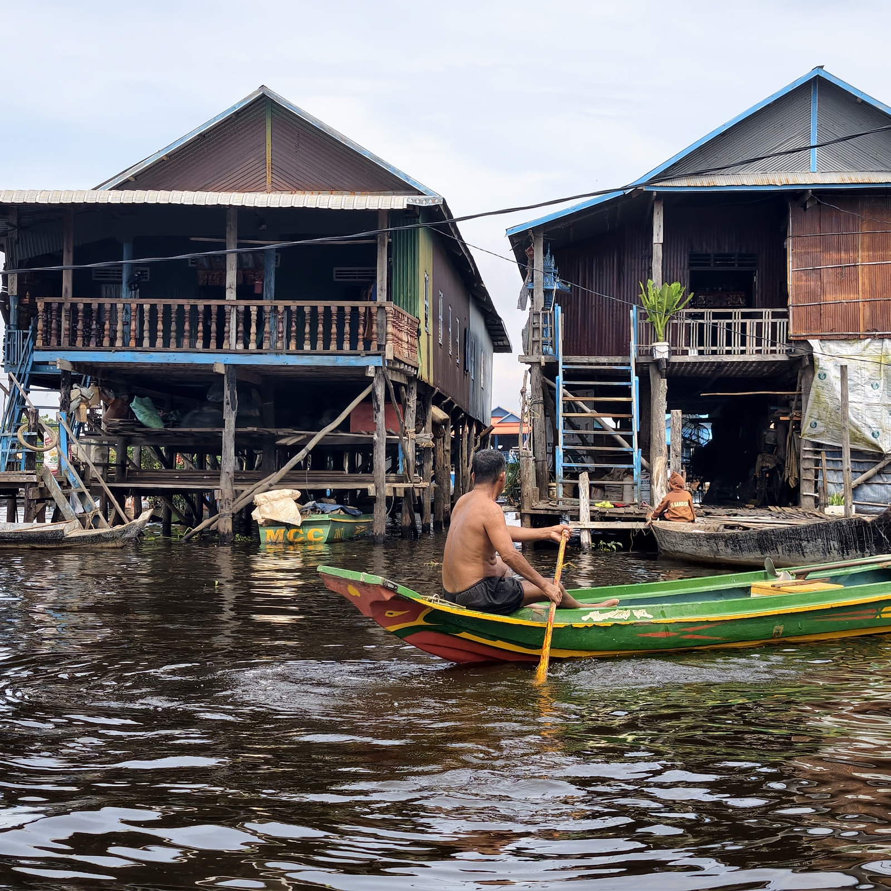
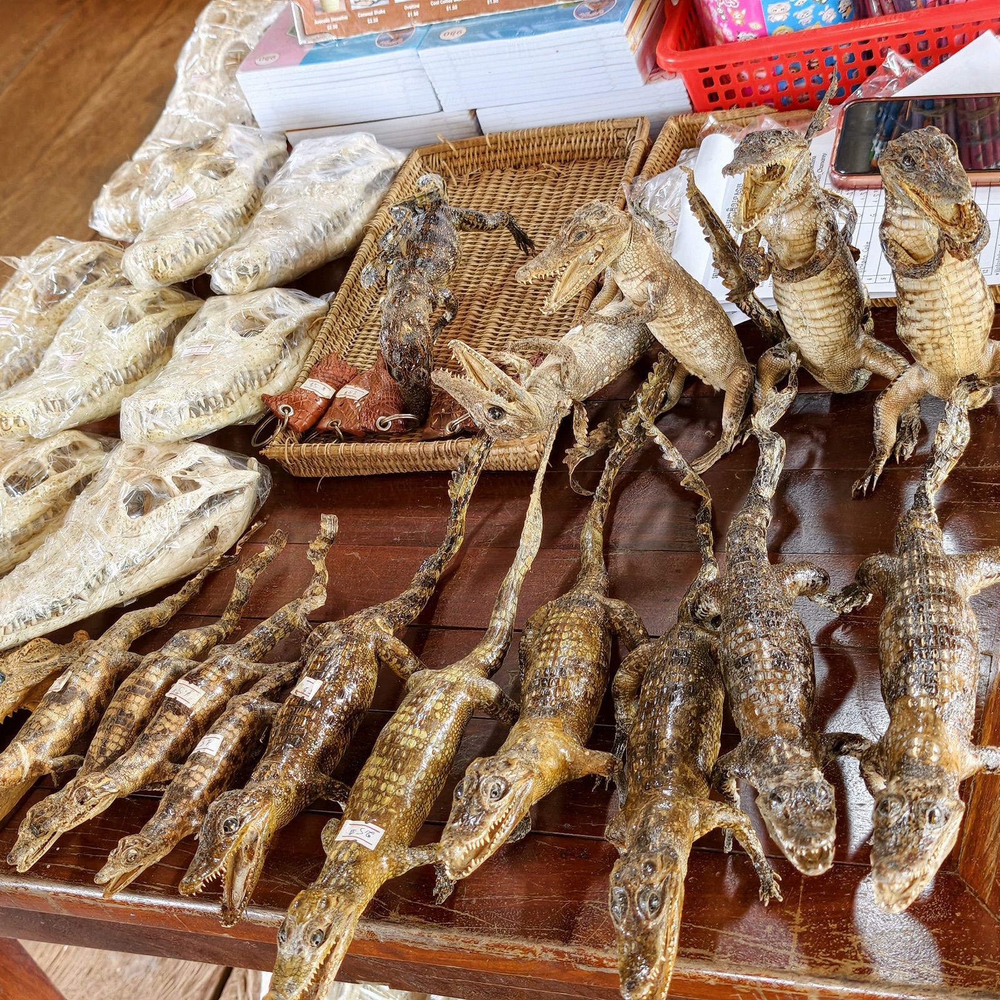
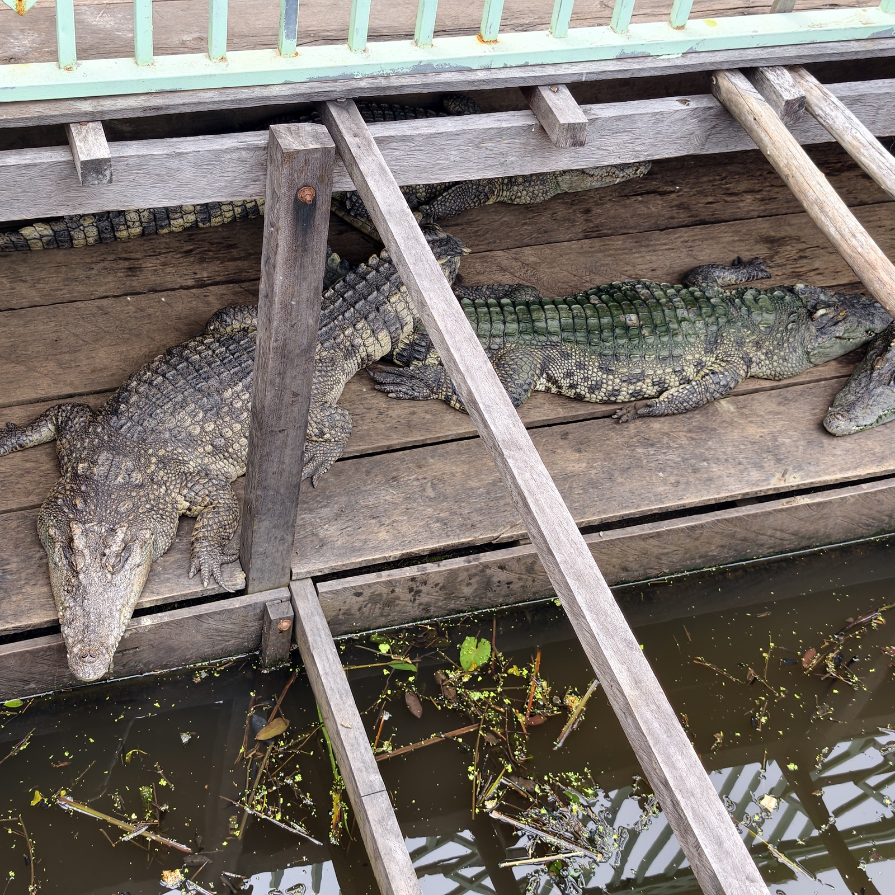
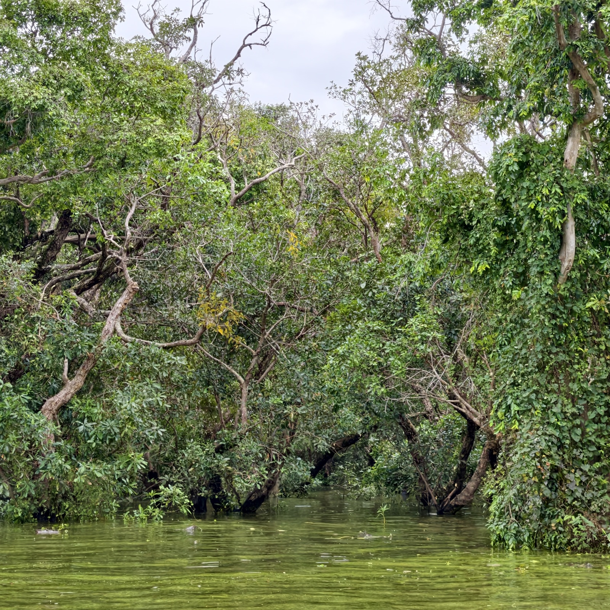

洞里萨湖
看完崩密列去的。船票每人二十二美元，不便宜。
洞里萨湖是东南亚最大的淡水湖，面积随季节大起大落：旱季只有约两千七百平方公里，水深不过一两米；雨季湄公河水倒灌，湖面涨到上万平方公里，水深八九米。湖边人的日子跟着水位过，水来了往高处退，水走了往低处挪。


船行一路，我全程不敢张嘴，怕溅到脏水。



二十二美元的船票，大头落在政府和船主手里，听说有些司机导游也有分成，船夫拿到手的很少，很依赖小费。而我忘了给。
湖上不少人家是越南裔，祖辈几代人前漂来的。柬埔寨不承认他们的国籍，越南也不接他们回去，没有身份就置不了地，只能一直住在水上。
湖上的人是真穷。陈老师说，她送衣服过去，那边的人无论给什么都收；她把一条连衣裙给了一个小男孩，孩子当场就套在了身上。
我们对他们的物质条件感到震撼——他们像景点一样被游览，门票收入却很少落到自己手里。